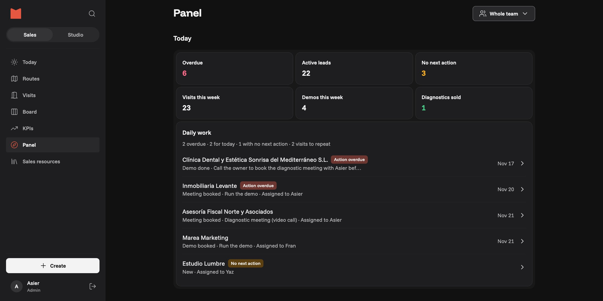

Musho CRM
One design system behind every screen
The web app our studio runs on: pipeline, tasks, documents and content in one place.

- The challenge
- A small studio ends up with its work spread across a pipeline tool, a task board, a docs tool and a content calendar. Each one looks and behaves differently, and nothing connects.
- The solution
- One web app built on a single design system. Tables, boards and documents share the same components, so a new screen feels familiar the first time you open it. It works in light and dark mode, on a desktop and on a phone.
- What I did
- I lead the design of the whole product and own the design system: tokens, components and the rules for using them. Every new screen is audited against the system before it ships, and what the audit finds goes back into the system as a rule.
- AI in the process
- The app is built in code with AI agents. The design system is written as rules they can read, so they reach for the right component by default.